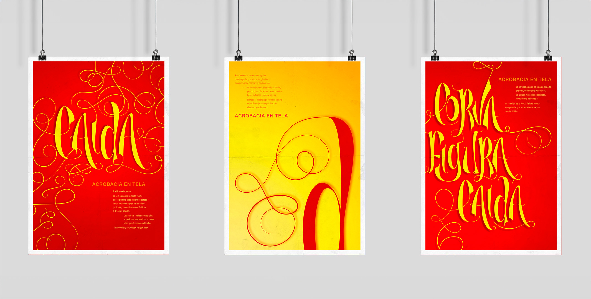
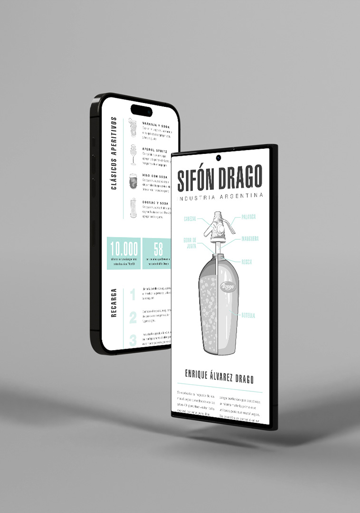
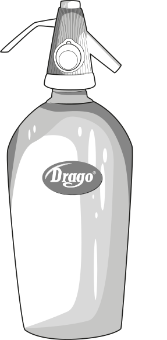

Trabajo desarrollado en la materia taller de diseño 3 - Catedra Ibarra.
Desarrollo de sistema de identidad de 3 latas de bebida a elección sobre marca reversionada
Juego de contraste entre imagen e ilustraciones, se trata de una bebida energizante de tipo isotónica. por lo que se intenta transmitir la energía que te aporta.
Se utilizaron imágenes urbanas y deportistas aficionados a los deportes extremos.
LETTERING
Trabajo desarrollado en la materia “espacio tipográfico 3” - Catedra Sanchez
Desarrollo de lettering con temática a elección.

En este caso, como tema de base se tomo el deporte “acrobacioa en tela” para el desarrollo del letering. Se generaron multiples pruebas sobre papel y luego tuvieron un reproceso digital.
Presenta florituras, trazo modulado, finos y gruesos.
INFOGRAFÍA
Trabajo desarrollado en la materia “espacio tipográfico 3” - Catedra Sanchez
Desarrollo de infografía sobre producto Argentino.


Con un estilo reversionado, se generaron las ilustraciones a partir de las típicas publicidades en revistas y diarios de la época donde predominaba el uso de una tinta.
El sifón Drago es un ícono nacional desde su invención.
NOTACIÓN MUSICAL
Trabajo desarrollado en la materia “Medios expresivos 3” - Catedra San Miguel
Desarrollo de desplegable e interactivo.
A partir de una pieza musical a elección se hizo una notación del ritmo, con diversas técnicas artísticas para luego reprocesarlas y generar un sistema de piezas visuales.
En esta ocasión se usaron líneas con marcador y manchas de tinta y acrílico.
En una ultima instancia se desarrollo un material interactivo que te permitía descubrir los procesos por los que fue mutando el trabajo y los diversos recursos utilizados.